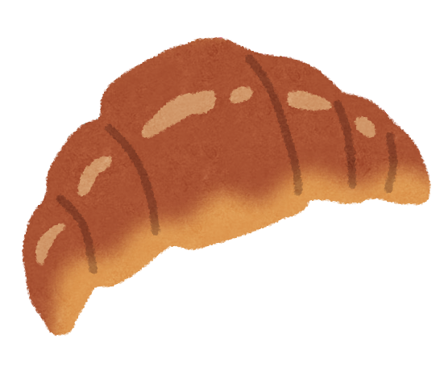

★好きなパンランキング★
これまでに数多くのパン屋さんを巡ってきた私が、食べた中で本当に美味しかったお気に入りのパンをランキング形式で詳しく紹介します！
第１位：絶品クロワッサン

第1位は、フランス発祥の伝統的なパン「クロワッサン」です！外側はパリパリ・サクサク、内側はしっとりとした極上の食感がたまりません。職人が幾重にも丁寧に重ねた生地の層が、絶妙な軽さを生み出しています。
特に発酵バターを100%使用したクロワッサンは、一口かじった瞬間に芳醇なコクと贅沢な香りが口いっぱいに広がり、最高のしあわせを感じることができます。焼き立ての温かい状態に、お気に入りのブラックコーヒーを合わせるのが最高の週末の過ごし方です。毎日でも食べ飽きない最高の王道パンです。